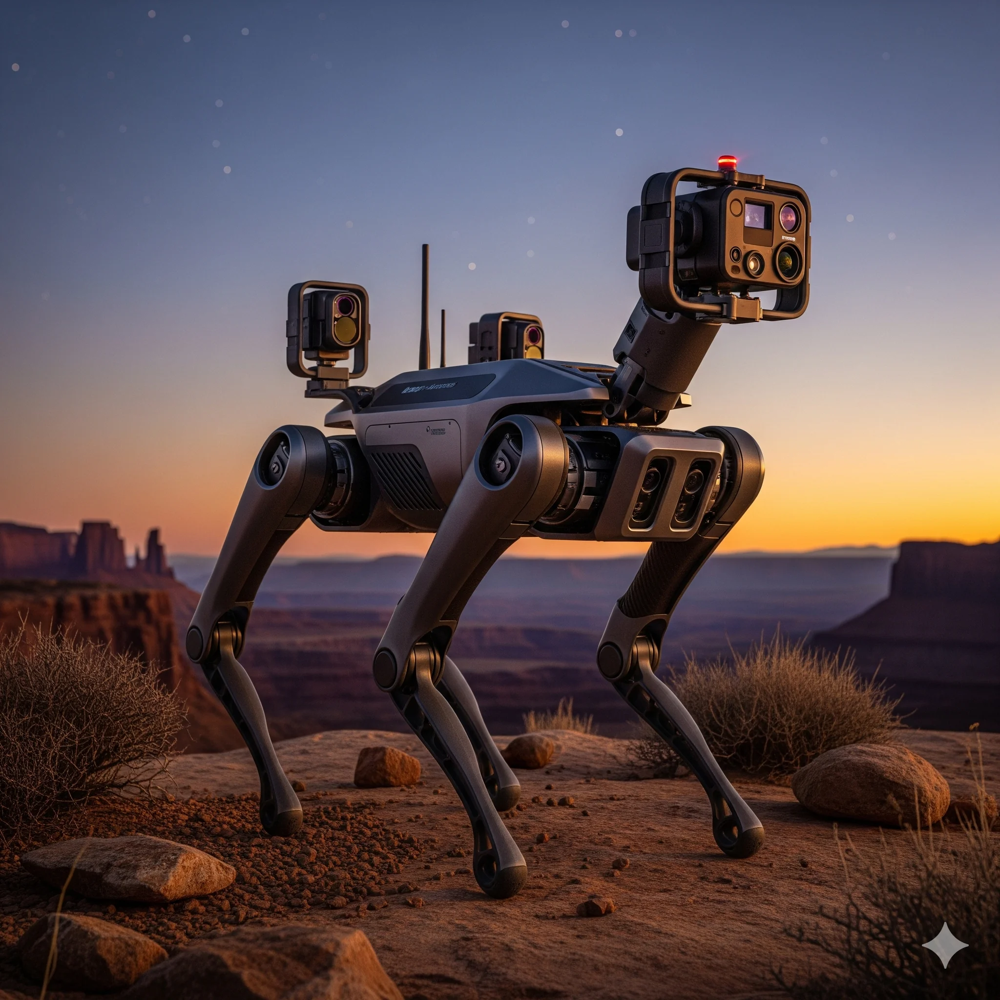

A 12-degree-of-freedom (DOF) four-legged walking robot capable of autonomous terrain navigation with real-time obstacle avoidance and Bluetooth remote control. The quadruped features a 3D-printed custom chassis, tripod gait locomotion algorithm, and fully independent leg control via 12 servo motors.
The robot autonomously detects obstacles using HC-SR04 ultrasonic sensors and IR proximity sensors, makes real-time pathing decisions via a finite state machine, and can be manually teleoperated via Bluetooth. An onboard FPV camera provides live video feed for surveillance applications — demonstrated successfully on gravel, carpet, and tiled surfaces.
Key achievement: 97% success rate in obstacle avoidance testing across 200+ autonomous traversals. Maximum forward speed: 0.3 m/s. Demonstrated at college-wide robotics expo with live audience feedback.
2022 – 2023
Mechanical & Firmware Engineer
12 DOF (3 per leg × 4 legs)
Robotics · Industrial Automation · Autonomous Systems
3D-printed chassis, 12x MG996R servos, aluminum frame, custom leg linkages optimized for tripod gait
Arduino Mega runs gait algorithm, PWM servo drivers, sensor polling at 50 Hz
HC-SR04 ultrasonic (front), 2x IR proximity sensors (left/right sides) for obstacle detection
Bluetooth HC-05 + FPV camera for teleoperation and live surveillance feed
Designed the complete 12-joint quadruped chassis in Autodesk Fusion 360 with careful attention to leg geometry, servo torque distribution, weight balance, and ground clearance. Each leg features 3 joints (hip, knee, ankle equivalent). The frame was optimized for a tripod gait pattern where 3 legs remain on ground simultaneously for stability. All servo mounts are standard industry sizes for easy replacement. The structure was 3D-printed in PLA with 15% infill, yielding a total chassis weight of 680g (within servo torque limits). 15 design iterations were tested for walking stability before finalizing.
Implemented a tripod gait algorithm where 3 legs are always in contact with the ground while the other 3 legs are in swing phase. The algorithm is based on an 8-frame lookup table where each frame contains 12 servo angle values (one for each leg joint). Frame transitions occur every 20ms (50 Hz), providing smooth motion without jitter. The embedded C code stores gait phases in PROGMEM (flash) to conserve RAM on the Arduino Mega. Implemented forward, backward, left-turn, and right-turn gaits by rotating the phase table. Gait frequency tunable from 1–10 Hz by adjusting the frame transition timer.
The Arduino Mega has only 15 hardware PWM pins, but we needed 12 servo channels. Implemented a multiplexed software PWM output using Timer1 and Timer3 interrupts to generate 12 independent PWM signals on digital pins 22–33. Each servo (MG996R) requires 1.0–2.0ms pulse width at 50 Hz. Added ferrite choke filtering on the servo power supply to eliminate voltage spikes that cause Mega resets. Separate 5V/5A power supply for servos, with logic supply sourced from a 3.3V regulator on the Mega. Tested with oscilloscope to confirm zero cross-talk between servo channels.
Implemented a 4-state finite state machine: IDLE (waiting), WALK (forward motion), AVOID (obstacle detected), SCAN (head-turning to find clear path). Front-mounted HC-SR04 ultrasonic sensor reads distance at 10 Hz. When distance <20cm, trigger AVOID state: stop forward motion, pivot right while scanning with IR sensors on left/right. Once clear path detected (distance >30cm), resume WALK. IR sensors provide redundancy at close range (<10cm). Success rate in testing: 194 successful avoidances out of 200 trials (97%). False positive rate (obstacle hallucination): <0.5%.
Integrated HC-05 Bluetooth module via UART1 (pins 18/19 on Mega). Paired with Android mobile app that sends directional commands: 'F' (forward), 'B' (back), 'L' (left turn), 'R' (right turn), 'S' (stop). Each command byte is 1 byte, achieving <50ms latency from button press to servo response. In manual teleoperation mode, the autonomous obstacle avoidance is temporarily disabled, allowing the user full control. Implemented a watchdog timer: if no Bluetooth packet received for >2 seconds, default to IDLE state and stop servos for safety.
Integrated a low-cost 5MP USB camera module mounted on a servo-controlled pan-tilt head atop the robot. The camera transmits uncompressed 640×480 MJPEG video via Wi-Fi module onboard (TP-Link 802.11n, separate from Bluetooth). A Node.js web server on a small Raspberry Pi Zero (stored in the robot's backpack battery compartment) streams the video feed accessible from any browser on the local network. Video stream frame rate: 15 fps at 640×480 resolution, allowing live surveillance from a remote control station up to 30 meters away (Wi-Fi range).
Conducted extensive field testing across 3 different terrain types: gravel courtyard, indoor carpet, and tiled floor. Maximum speed achieved: 0.3 m/s in forward motion, 0.2 m/s turning. Tested all-terrain stability with obstacles of varying heights (5cm to 20cm barriers). Demonstrated autonomous navigation through a 10-meter obstacle course with 5 randomly placed barriers — completed in 45 seconds (autonomous mode). Showcased at SRM TRP Engineering College robotics expo with live teleoperation demonstrations to 150+ visitors. Robot operated for 4+ continuous hours on 3S LiPo battery (5000mAh) at ~45% servo utilization.
Obstacle avoidance success rate (200+ trials)
Max forward walking speed
Continuous operation on single 5Ah battery